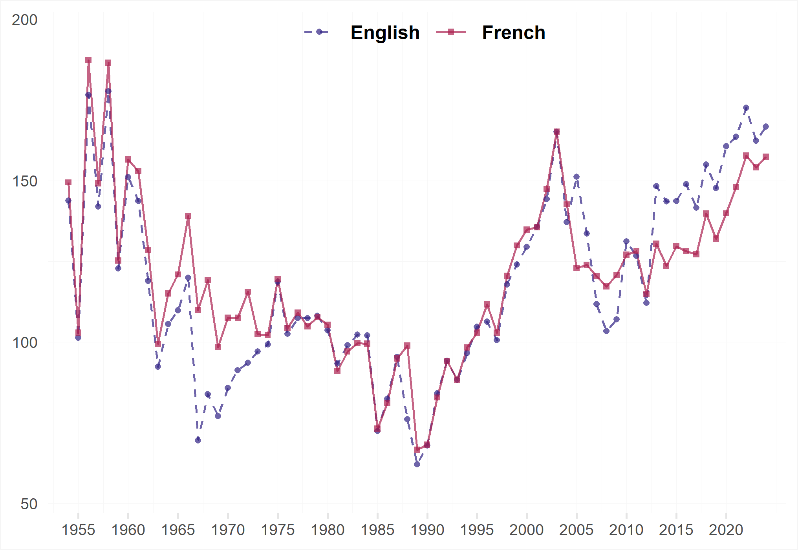
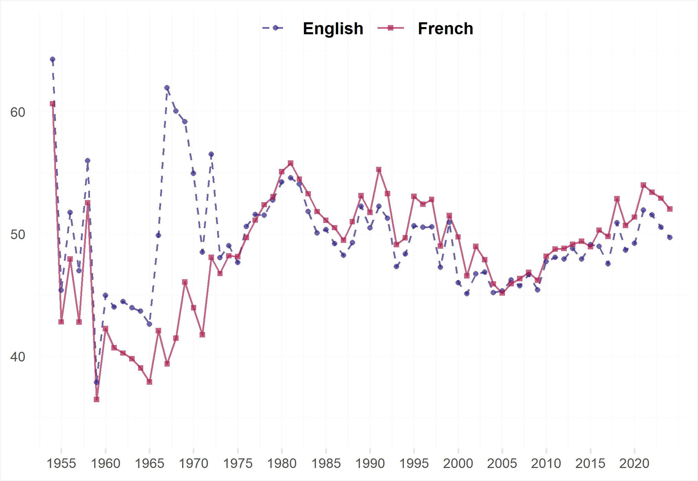
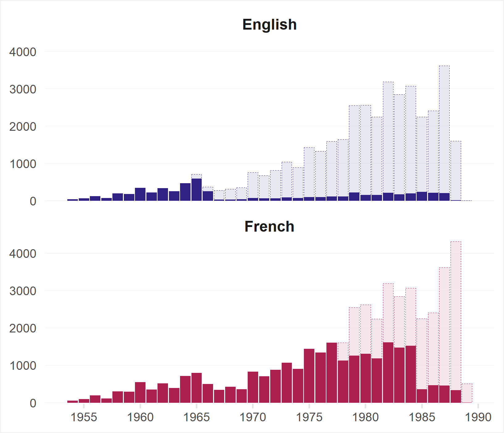

@incollection{ovadek2023iuropatext,
author = "Ovádek, Michal and Fjelstul, Joshua and Naurin, Daniel and Lindholm, Johan",
title = "The IUROPA Text Corpus",
editor = "Johan Lindholm, Daniel Naurin, Urska Sadl, Anna Wallerman Ghavanini, Stein Arne Brekke, Joshua Fjelstul, Silje Synnøve Lyder Hermansen, Olof Larsson, Andreas Moberg, Moa Näsström, Michal Ovádek, Tommaso Pavone, and Philipp Schroeder",
booktitle = "The Court of Justice of the European Union Database",
year = 2023,
publisher = "IUROPA Project",
url = "https://iuropa.pol.gu.se/"
}IUROPA Text Corpus
Codebook and release notes
Introduction
This document accompanies the IUROPA Text Corpus, a database of judicial texts from the Court of Justice of the European Union (CJEU). The database comprises all types of judicial decisions and Advocate-General (AG) opinions at the paragraph level. Where available, both the French and English texts are included.
The corpus, codebook and release notes are current as of version 0.1 (release 2023-10-19).
The corpus remains work-in-progress. Please let us know if you notice an error in the data or if you have suggestions for improvements. Consult the IUROPA website for more resources.
Citation
When using any part of the IUROPA Text Corpus (including this page), please refer to the following citation:
Ovádek, Michal, Joshua Fjelstul, Daniel Naurin and Johan Lindholm. 2023. “The IUROPA Text Corpus”, in Lindholm, Johan, Daniel Naurin, Urska Sadl, Anna Wallerman Ghavanini, Stein Arne Brekke, Joshua Fjelstul, Silje Synnøve Lyder Hermansen, Olof Larsson, Andreas Moberg, Moa Näsström, Michal Ovádek, Tommaso Pavone, and Philipp Schroeder, The Court of Justice of the European Union (CJEU) Database, IUROPA, https://iuropa.pol.gu.se/.
In BibTex form:
Rationale
Prior to the release of the IUROPA Text Corpus, there was no unified and comprehensive database of CJEU decisions. Individually, neither the Curia nor the Eur-Lex website contains all decisions in a plain text format. In addition, older decisions – including landmark rulings such as Costa v ENEL and Cassis de Dijon – are only partially and imperfectly digitized.
The following table compares the number of unique documents present in the IUROPA Text Corpus with the number of documents containing plain (html) text on Curia and Eur-Lex by language version:
| English | French | |
|---|---|---|
| Curia | 23394 | 35900 |
| Eur-Lex | 31992 | 35013 |
| IUROPA | 36206 | 46471 |
Whereas most academic and legal work relating to the CJEU has relied on English texts, this comparison reveals how much more comprehensive the French language corpus is. French remains the working language of the CJEU and not all decisions are translated into English.
Moreover, unlike most previous attempts to create a CJEU database, the unit of analysis in the IUROPA Text Corpus is the paragraph. Paragraphs are understood as blocks of text separated by line breaks in a document. This definition comprises both conventionally designated (and numbered) paragraphs and individual lines with text, such as presentation of lawyers and judges. Overall, paragraph-level data offers more granularity and versatility than decision-level data.
Overview
As of version 0.1 (release 2023-10-19), the IUROPA Text Corpus contains a total of 10059348 paragraphs across 82677 documents. The number of documents in the corpus varies significantly over time, but also between language versions.

The maximum number of French documents per year (1964) occurs in 2018. An average year contains 664 documents in French and 517 documents in English.
The documents contain a varying number of paragraphs, ranging from 2 to 7157. On average, French documents have 114 paragraphs, while English documents have an average of 105 paragraphs.

The large drops in the average number of paragraphs in the 1970s and 1980s can be attributed to the incomplete digitization of CJEU documents in that period. Having made more progress on French documents so far (see below), we can see how much of a difference full digitization makes compared to the highly imperfect plain texts found on Eur-Lex.
The digitization effect is similarly visible at the level of words-per-paragraph. More generally, average differences between language versions stem not only from linguistic variance between English and French, but also from differences between the two samples – recall that French is the default language for the vast majority of documents, not all of which end up being translated into English.

On average, French paragraphs contain 49 words, while English paragraphs have an average of 50 words.
A major advantage of the IUROPA Text Corpus is the inclusion of digitized texts of older decisions. After applying state-of-the-art optical character recognition (OCR) to correctly segmented PDFs of documents from 1954 to 1989, the digitization pipeline involves highly labour-intensive cleaning of plain texts to ensure their high quality at the paragraph level.

The digitization task remains work-in-progress. Cleaned data is added to the corpus on a rolling basis. Of the total 86649 pages of text that require manual checking or cleaning, 30691 have been completed and added to the corpus.
Priority has been given to French documents: so far, 54% of pages in French and 14% of English pages have been processed. Contact us if you wish to contribute to this ongoing process.
Process
The IUROPA Text Corpus is generated using a data pipeline that combines automatic and manual processing. The workflow begins by downloading all html pages from Curia and Eur-Lex relating to CJEU decisions, including AG opinions. Subsequent steps retrieve and clean the texts and metadata at the paragraph level from the downloaded pages. This automatic process is then supplemented with manually curated data on decisions for which the html pages offer incomplete or erroneous texts. The main contribution of the manually curated data is the retrieval of older paragraphs that previously only existed in PDF documents. Finally, where more than one source contains a document, the source with the highest quality text (most complete, best labelled) is selected.
Codebook
The iuropa_text.gz.parquet file contains a rectangular spreadsheet where each row encodes information about a single paragraph of a given document. The paragraph information is spread over columns with the following names and descriptions:
| Description | Values | |
document_id |
Uniquely identifies each document in the corpus. | character Document identifiers. |
paragraph_id |
Uniquely identifies each paragraph in the corpus. | character Paragraph identifiers. |
source |
Source of the document text. | character Curia (cur), Eur-Lex (elx) or optical character recognition (ocr). |
language |
Language version of the document. | character English (EN) or French (FR). |
ecli |
European Case Law Identifier (ECLI). | character ECLI identifiers. |
court |
Authoring EU court. | character One of Court of Justice, General Court or Civil Service Tribunal. |
date |
Date of publication. | character Date in format YYYY-MM-DD. |
year |
Year of publication. | integer Ranges from 1954 to 2023. |
text |
Paragraph text. | character Free text. |
line_id |
Running number for paragraphs in each document. | integer Ranges from 1 to n paragraphs. |
section |
The section of the document where the paragraph is found. | character Experimental. One of presentation, grounds, costs, operative, footnotes, annex. |
paragraph_type |
A basic categorization of paragraph types. | character Experimental. |
paragraph_number |
The official paragraph number used in case citations. Note that some older decisions did not follow the numbering scheme which later became standard. | integer Paragraph numbers. 0 indicates no official paragraph number. Several paragraphs can belong to the same paragraph_number. |
nchar |
Number of characters in text. |
integer Minimum 1. |
As the IUROPA Text Corpus remains work-in-progress, the information in this codebook as well as the underlying data are subject to change.
Release notes
Database versioning is encoded in the version number and the date of the release. Version 0.1 constitutes the initial release of the database. Minor adjustments and updates are only reflected in the release date (currently 2023-10-19), not the version number. Major changes are captured by the version number and documented below.
Version 0.1
- Initial release